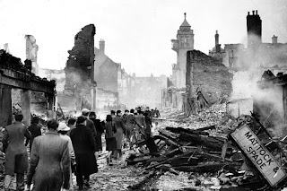
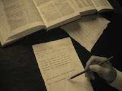
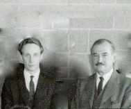
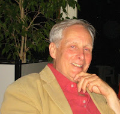
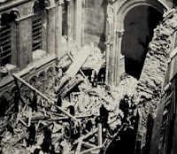

Psychologist and author Alan Kennedy was researching wartime
conditions in Vichy France for his fourth novel Lucy when he remembered that there was
something he wanted to know about the bombing of Coventry in November 1940. Did
Winston Churchill have advance warning of the raid? Could he have saved the
city at the cost of alerting the enemy that their Enigma code had been broken?
 |
| Coventry, November 1940 |
{kind=link}
All of us, I’m sure, will have had
the experience being led astray from our main path of research along some
elusive but compelling byway which, startlingly often, turns out to be relevant
in some way we could not possibly have anticipated. Alan Kennedy was born in
the West Midlands, about thirty miles from Coventry. He was a baby in his cot
at the time of the bombing: his father left for work every day - often at
night- but what did he do? Why wasn't he in uniform? His mother was terrified
for the rest of her life by the sound of the air raid siren. Why? Anyone affected
by bombing would have at least a passing interest in knowing whether it had
been preventable. Kennedy’s research, subsequently published in his “autobiographical
biography” Oscar & Lucy, records more complex answers.
 |
| Hut 3, Bletchley Park |
{kind=link}
Kennedy was startled. He had known Oscar Oeser, he realised. Oeser had been “The Prof” who had given him his first academic job as a psychology tutor in Melbourne in the 1960s. The Prof was abrupt, reclusive, frightening. A difficult colleague, he was generally disliked. No one had any idea that he had been a wartime Wing Commander with such essential responsibility. Lucy lay abandoned as Kennedy unearthed an extraordinary story of wartime and post-war achievement which Oeser had never mentioned.
 |
| AK and "The Prof "in Melbourne |
{kind=link}
 |
| AK in Dundee: Professor of psychology, novelist, biographer, memory expert |
{kind=link}
Oscar & Lucy is a fascinating brief biography. That’s its most obvious level. The secondary, auto-biographical, elements are also far more subtle than mere co-incidences of academic tenure. Those questions Kennedy had asked himself as
a child about his father’s wartime experience give an unexpected emotional
urgency to the discovering of Oeser’s never-mentioned career. The style is approachable and readable even when the material is complex. There's plenty of illuminating comment on the development of psychology as an academic discipline. The additional aspect that,
for me, makes this book outstanding is Kennedy’s understanding of memory. He presents it as a
personal construct, intrinsically fallible, defined by gaps and stabilised only
by the organising power of story and the larger archetypal themes called schema.
Oscar Oeser refused to make a story
out of his memories. Apart
from the single letter to Jean Howard, written in 1975, there is no evidence
that he ever talked about his work with Ultra – or his equally fascinating post-war
role in the de-Nazification of Germany. It’s possible that this
degree of suppression – admirable in so many ways (and anyway necessary for a
long while under the Official Secrets Act) – had a negative effect on his
behaviour and may have soured his relationship with others – at least among his
academic colleagues. Kennedy’s father never told his story either -- and this wasn't easy for his son to understand.
 |
| The bomb that hit the Guards Chapel, London 1944. My mother was having a lazy morning in her flat in St James's. She heard the bomb approaching and hid under her bed. Relief at her escape turned to deep sadness, and anger, when she learned that people she knew and parents of close friends were in the chapel and were killed |
{kind=link}
| Baghdad, March 2003 |
{kind=link}
It’s never been an adequate strategy. The impact of WW2 on mum’s life was traumatic for so many reasons. She’s a highly sensitive,
imaginative and damaged person and, when she needs to talk about The War we have finally learned to sit tight, take a deep breath and agree. It’s incredibly hard not to question or correct as
facts and chronologies become increasingly confused and happenings ever more implausible
and dreamlike. First and Second World Wars jumble together and most recently
she has described herself as vividly present on phantasmagoric battlefields surrounded by the dead. Other families of people with dementia will recognise the activity of
confabulation where complex narrative accounts of “untrue” events are related with
an urgency and emotional passion that seems to increase the further the story
moves from verifiable happenings. The wilder the story the more perilous it is
for the listener to make any unguarded comment. We have to accept that – at the
moment of telling – these memories are “true”. As Alan Kennedy remarks “We are
the authors of ourselves.”
I was reading Oscar & Lucy as I stayed with my mother after the disaster of her
new year. In the early hours of Jan 1st she entered a state of near
delirium, smashing crockery, tearing down the curtains, being sick into the
pot-plants. She was catatonic the next day and had no recollection of what had
happened or why. We hadn’t been very far away and had been woken by the dog
leaping onto my partner’s pillow, terrified by the incessant bang, crackle and whoosh
of the modern multi-shot fireworks. What people with dementia cannot explain in
words, they express through their behaviour. There would be such a great mercy in forgetting if it wasn’t for these uncontrollable hazards of reminding.
| Baghdad, 2003 |
{kind=link}